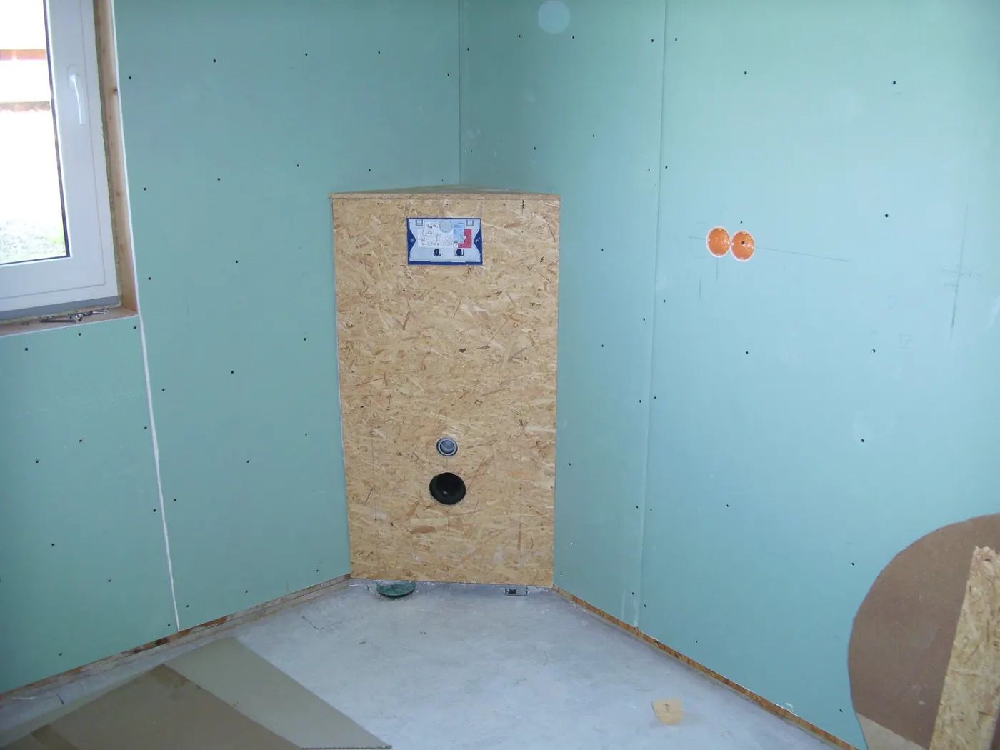
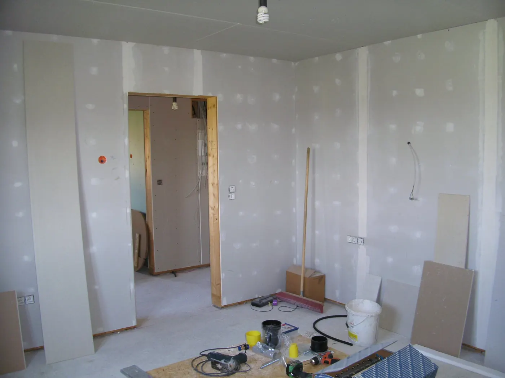
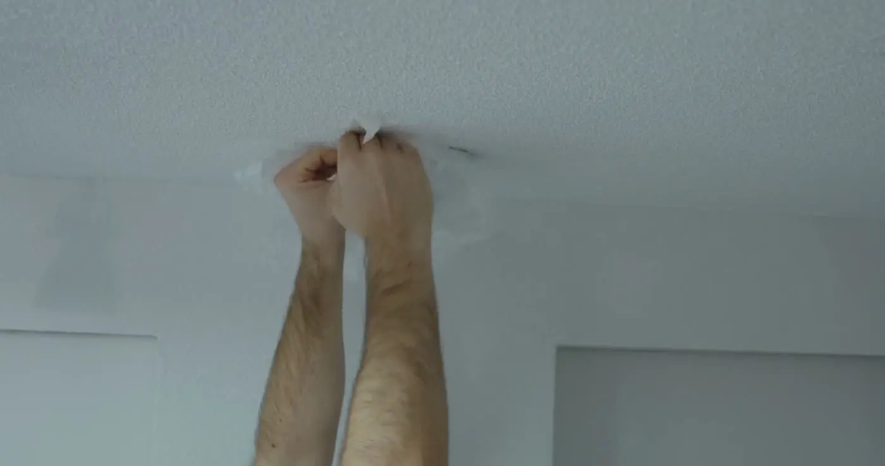
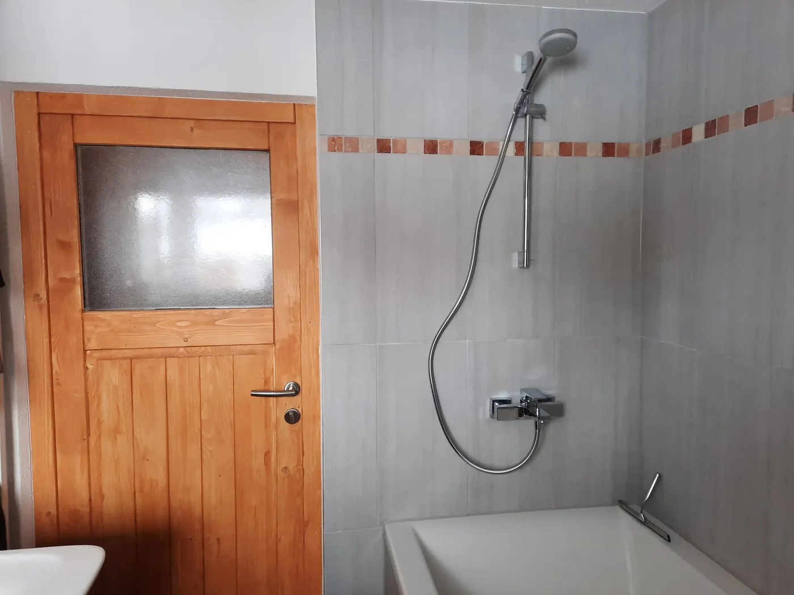

Trockenbauin Epfach, Landsberg und rund um den Ammersee
Deckenverkleidung, Wandverkleidung oder individuelle Unterkonstruktionen? Dann sind wir der richtige Ansprechpartner — auch im Feuchtraum.
So gehen wir vor.
Trockenbau ist der schnelle Weg, Räume neu aufzuteilen, Installationen zu verstecken und Decken zu schließen — ohne Nässe, ohne lange Trocknungszeiten. Wir stellen Ständerwerke, beplanken, spachteln und übergeben malerfertig.
Ortstermin vereinbaren
Was beim Trockenbau dazugehört.
- 01
Trennwände
Neue Räume ohne Mauerwerk: Ständerwerk, Dämmung, Beplankung, gespachtelt.
- 02
Abgehängte Decken
Höhe korrigieren, Leitungen verstecken, Dämmung einbringen.
- 03
Wandverkleidungen
Vorsatzschalen vor altem Mauerwerk — für Dämmung, Installation oder eine gerade Wand.
- 04
Unterkonstruktionen
Individuell für Nischen, Regale, Vorwandinstallationen und Dachschrägen.
- 05
Feuchträume
Imprägnierte Platten und Abdichtung — Trockenbau im Bad ist kein Problem.
- 06
Dachgeschoss
Schrägen beplanken, Dämmung schließen, Wohnraum gewinnen.
Von unseren Baustellen.



Häufige Fragen
Was Bauherren uns am Telefon zuerst fragen — kurz beantwortet.
Ihre Frage steht nicht dabei? Rufen Sie an — Norbert Wiesenbach ist selbst am Telefon.
0171 6835628Hält eine Trockenbauwand ein Regal oder einen Fernseher?
Ja, wenn sie dafür geplant ist. Wir setzen Traversen und Verstärkungen dort, wo später etwas hängen soll — sagen Sie uns das vorher.
Trockenbau oder gemauerte Wand?
Trockenbau ist schneller, leichter und flexibler; Mauerwerk ist massiver und besser bei Schall. Wir beraten je nach Raum.
Geht Trockenbau auch im Bad?
Ja — mit den richtigen Platten und einer sauberen Abdichtung. Machen wir regelmäßig.
Wie schnell geht das?
Eine Trennwand steht oft an einem Tag, gespachtelt und malerfertig nach zwei bis drei.
Reden wir über Ihr Bauvorhaben.
Rufen Sie an oder schreiben Sie kurz, worum es geht. Der Rest läuft an drei Nägeln entlang:
- Anruf oder NachrichtSie sagen, was ansteht — am Telefon oder über das Formular.
- OrtsterminWir kommen vorbei, messen und schauen uns den Bestand an. Kostenlos.
- Klares AngebotEin Preis, ein Zeitplan, ein Ansprechpartner — dann geht es los.